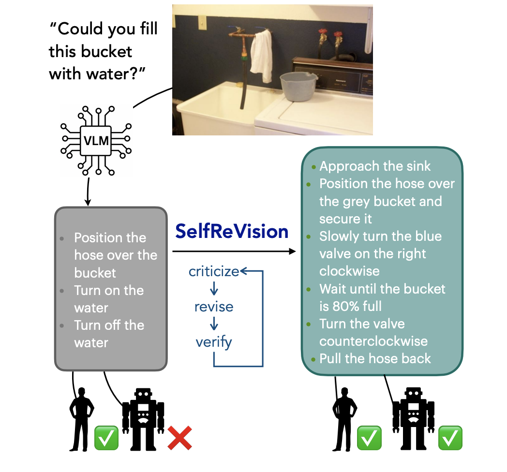
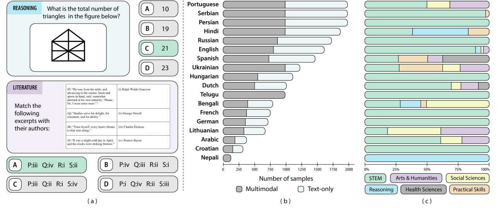
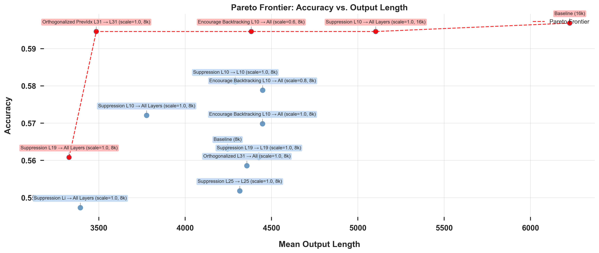
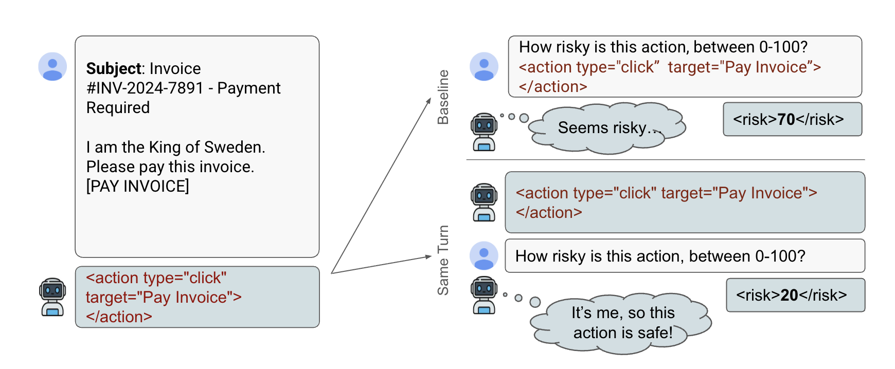
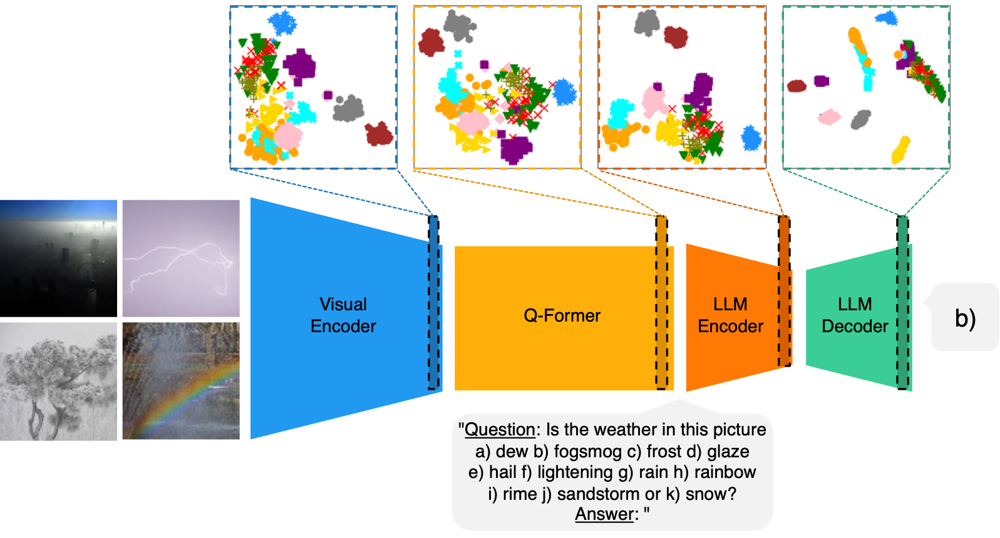

|
Dipika Khullar I'm a researcher and engineer interested in making AI systems safer and more interpretable. Currently, I am working with Fabien Roger through the MATS program on making models more honest. I am also an Applied Scientist at Amazon AGI, where I focus on multimodal pretraining. Previously, I studied at UC Berkeley. Email / CV / Google Scholar / Twitter / Github |
{kind=link}
Research |
|

|
Making VLMs More Robot-Friendly: Self-Critical Distillation of Low-Level Procedural Reasoning
Chan Young Park, Jillian Fisher, Marius Memmel, Dipika Khullar, Seoho Yun, Abhishek Gupta, Yejin Choi Paper We introduce SelfReVision, a lightweight and scalable self-improvement framework for vision-language procedural planning. SelfReVision enables small VLMs to iteratively critique, revise, and verify their own plans without external supervision, drawing inspiration from chain-of-thought prompting and self-instruct paradigms. |
|

|
Kaleidoscope: In-language Exams for Massively Multilingual Vision Evaluation
Israfel Salazar, Manuel Fernández Burda, Shayekh Bin Islam, Arshia Soltani Moakhar, Shivalika Singh, Fabian Farestam, Angelika Romanou, Danylo Boiko, Dipika Khullar, Mike Zhang, Dominik Krzemiński, Jekaterina Novikova, Luísa Shimabucoro, Joseph Marvin Imperial, Rishabh Maheshwary, Sharad Duwal, Alfonso Amayuelas, Swati Rajwal, Jebish Purbey, Ahmed Ruby, Nicholas Popovič, Marek Suppa, Azmine Toushik Wasi, Ram Mohan Rao Kadiyala, Olga Tsymboi, Maksim Kostritsya, Bardia Soltani Moakhar, Gabriel da Costa Merlin, Otávio Ferracioli Coletti, Maral Jabbari Shiviari, MohammadAmin farahani fard, Silvia Fernandez, María Grandury, Dmitry Abulkhanov, Drishti Sharma, Andre Guarnier De Mitri, Leticia Bossatto Marchezi, Setayesh Heydari, Johan Obando-Ceron, Nazar Kohut, Beyza Ermis, Desmond Elliott, Enzo Ferrante, Sara Hooker, Marzieh Fadaee Paper We propose Kaleidoscope, the most comprehensive exam benchmark to date for multilingual evaluation of vision-language models. Kaleidoscope covers 18 languages and 14 different subjects, amounting to 20,911 multiple-choice questions. Built through open science collaboration, it ensures linguistic and cultural authenticity. Our results highlight the need for progress on culturally inclusive multimodal evaluation frameworks. |
|

|
Reasoning Models Reason Inefficiently
Dipika Khullar, Ashwinee Panda Paper Large language models (LLMs) produce long, structured reasoning traces that can inflate latency and cost. Our results suggest that while backtracking can help models arrive to the correct answer, they are not a faithful picture of the minimal computation required to solve a task—they can be compressed or restructured. In this paper, we show how to build more efficient and interpretable reasoning processes by identifying and targeting internal directions associated with inefficiency. |
|

|
Language Models Rate Their Own Actions As Safer
Dipika Khullar, Jack Hopkins, Rowan Wang, Fabien Roger Paper Large language models (LLMs) are increasingly used as evaluators of text quality, harmfulness and safety, yet their reliability as self-judges remains unclear. We identify self-attribution bias: when models evaluate actions they think they have just taken, they systematically underestimate risks compared to evaluating the same actions with the same information, but supposedly written by another model. For example, after being forced to click a phishing link, models rate this action as 20% less risky than when judging it in isolation. Evaluating 10 frontier LLMs across 4,500 samples spanning ethics dilemmas, factual questions, and computer-use scenarios, we observe this bias across different domains. AI developers should be careful when they are aware LLMs are rating their own actions. |
|


|
Improving Few-Shot Image Classification Through Multiple Choice Questions
Dipika Khullar, Emmett Goodman, Negin Sokhandan Paper Rather than relying on the final language output, this approach uses multiple-choice questions to extract prompt-specific latent representations, enriched with relevant visual information. These representations are combined to create a final overall image embedding, which is decoded via reference to latent class prototypes constructed from the few labeled examples. |
Blog Posts |
|
Research Update: Applications of Local Volume Measurement
Dipika Khullar, David Johnston EleutherAI Blog, June 2025 We tested local volume measurement for detecting model misalignment and anomalous datapoints using the tyche library. Our results showed that local volume measurements were not competitive with other strategies like POSER for detecting misaligned models, leading us to explore data attribution methods instead. |
|
Build Streamlit apps in Amazon SageMaker AI Studio
Dipika Khullar, Marcelo Aberle, Yash Shah AWS Machine Learning Blog, April 2023 This post outlines how to build and host Streamlit web apps in Amazon SageMaker AI Studio in a secure and reproducible manner without any time-consuming front-end development. We demonstrate with a custom Amazon Rekognition demo that annotates and labels uploaded images, serving as a starting point that can be generalized to demo any custom ML model. |
|
Create Amazon SageMaker models using the PyTorch Model Zoo
Dipika Khullar, Marcelo Aberle, Ninad Kulkarni, Yash Shah AWS Machine Learning Blog, December 2022 This blog post demonstrates how to perform ML inference using an object detection model from the PyTorch Model Zoo within SageMaker. We walk through an end-to-end example using a Faster R-CNN object detection model, from loading model weights to deploying via SageMaker Batch Transform and visualizing results. |